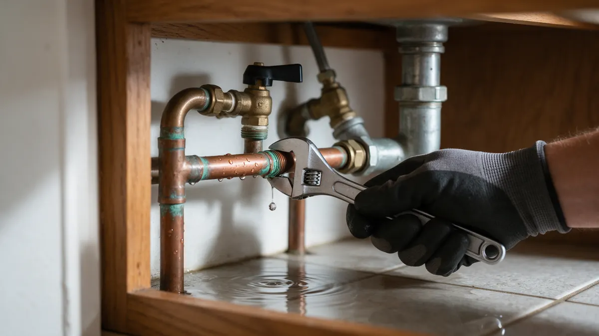

A Homeowner Handbook for Water Leaks in Colorado

A water leak at home rarely announces itself, so the first job is confirming it exists and then limiting the damage. This handbook walks Colorado homeowners through the immediate steps, the warning signs worth a closer look, and how a plumber usually tracks the source. When you are ready for hands-on help, we connect you with independent local plumbers in your area.
Your first steps when water is where it should not be
Locate the main shutoff valve before anything else. In most Front Range homes it sits near the water meter, in a basement, utility closet or garage wall. Turn it clockwise until it stops. If you have never tested it, do so on a calm day, because old valves can stick.
- Turn off the main valve
- Open a low faucet to drain pressure
- Move rugs and electronics away from wet areas
- Photograph the damage for your records
- Note which fixtures are affected
A checklist of warning signs
Look at the meter with every fixture off. If the dial or leak indicator keeps moving, water is escaping somewhere. Other clues include a musty smell in a closet, paint that bubbles, warm patches on a floor, and a sound of running water when the house is quiet.
Outdoors, a soft, green or muddy strip of lawn between the house and the street can point to a service line problem. Denver Water and other local utilities generally treat the line on your side of the meter as the homeowner's concern, so it helps to know where that boundary sits.
Seasonal patterns help too. A bill that climbs in summer may be irrigation, while one that climbs in January with no change in habits deserves a closer look. Keep a note of meter readings for a few days so the plumber has real numbers to work from.
How a plumber usually tracks it down
A typical visit starts with questions: when you noticed it, which rooms are affected, and whether the bill changed. From there the plumber may pressure test the lines, isolate sections with valves, and listen with acoustic equipment that picks up the hiss of escaping water through floors and walls.
Thermal imaging can show cooler or warmer zones behind drywall, and moisture meters confirm where wood is wet. The aim is to open as little of the house as possible.
Questions to ask the plumber you are connected with
Ask how the leak was confirmed, what access is needed, and whether the fix is a repair of one section or a larger replacement. Ask what the plan is for drywall, flooring or landscaping afterwards, since many plumbers hand that part to other trades.
It also helps to ask what could have caused the failure, so you can address the root issue rather than only the symptom.
The Colorado angle and preventing a repeat
Freeze-thaw swings, expansive clay soil along the Front Range and high water pressure all stress pipes over time. A pressure-reducing valve set sensibly, insulated exposed lines and a yearly check of hose bibs and under-sink connections remove many common causes.
Homes with galvanized steel or older copper may leak at corroded joints. Mountain cabins left empty over winter deserve a shutoff and drain plan before the first hard freeze. Plumbing Pros Colorado is a referral line, so the repair itself is done by the independent plumber you are connected with, not by us.
Leaks that start outside the house
Not every leak is inside the walls. A broken sprinkler line, a failed hose bib or a cracked service line between the meter and the foundation can all waste water. Spring irrigation start-up is a common time for a hidden break to show itself, when pressure returns to lines that froze and thawed over winter.
Walk the yard after turning off the sprinkler system. Soggy ground, a dip in the lawn or water pooling near the foundation are worth reporting to the plumber, along with where your meter and shutoff sit.
Frequently asked questions
How can I tell if my water meter shows a leak?
Turn off every tap and appliance, then watch the meter. A moving dial, spinning triangle or small flow indicator suggests water is passing through when nothing is in use. Take a photo, wait a short while, and compare. Share the result with the plumber, since it narrows the search.
Is a wet spot on the ceiling a plumbing leak?
It can be, but roof leaks, condensation and HVAC drain overflow cause similar stains. If the stain is under a bathroom or kitchen, a supply or drain line is a likely suspect. A plumber can check the area with a moisture meter and tell you which system is involved.
Should I open the wall myself to look?
Better to hold off. Cutting drywall can spread damage, hit wiring or miss the source entirely. Shut the water off, document the area and let the plumber decide where access is needed so the opening stays small.
Can a small drip wait until the weekend?
A slow drip still wets framing and can grow mold, so shutting the supply to that fixture is sensible while you arrange help. If the drip is from a main line or you cannot isolate it, treat it as urgent and turn off the main valve.
Related plumbing services
Water Leak Repair by city
- Water leak repair in Denver
- Water leak repair in Evergreen
- Water leak repair in Boulder
- Water leak repair in Arvada
- Water leak repair in Colorado Springs
- Water leak repair in Broomfield
Ready to talk to someone? Call (720) 794-0974 or visit get a leak traced by a local plumber.